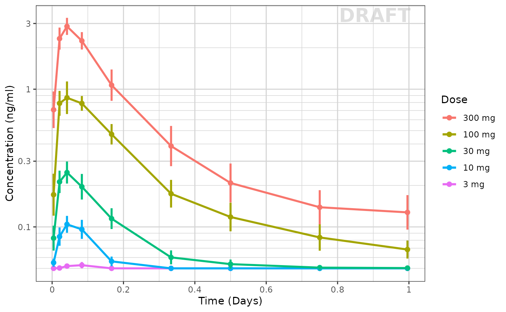
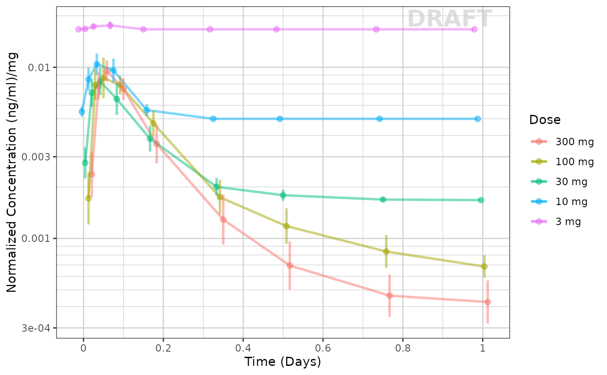
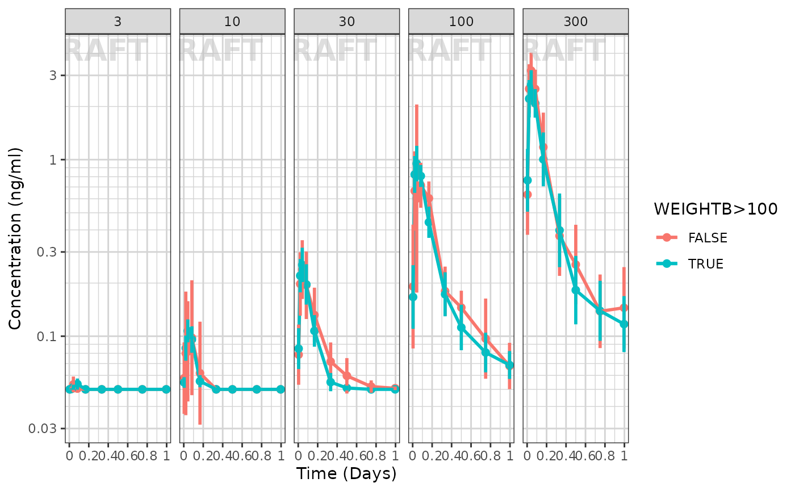
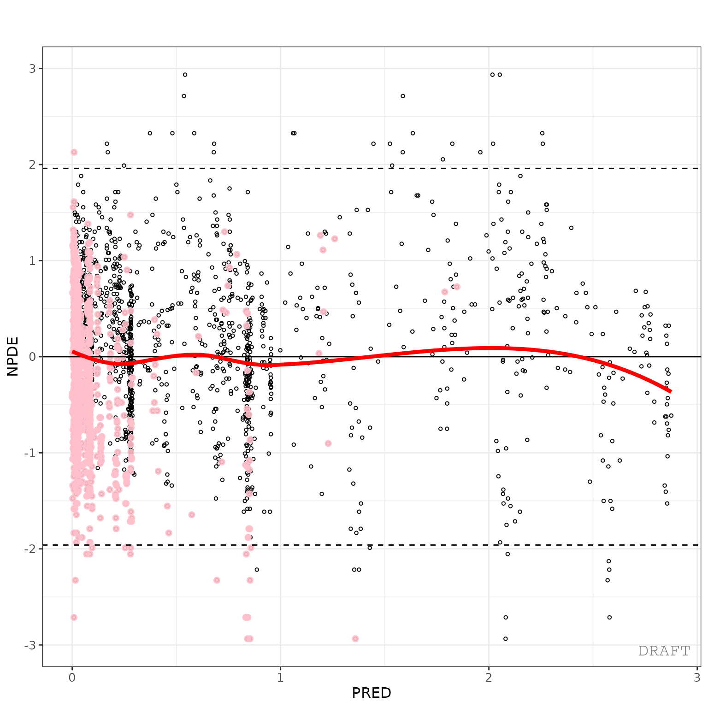
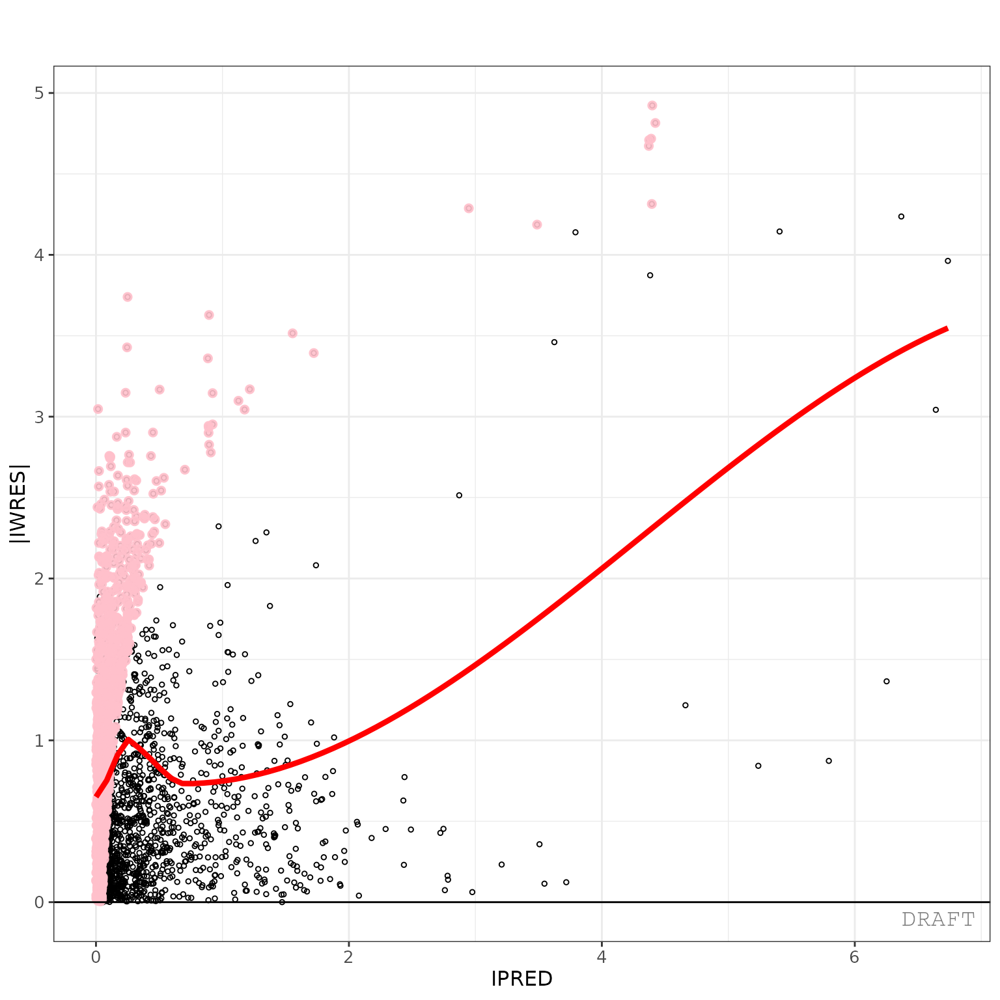
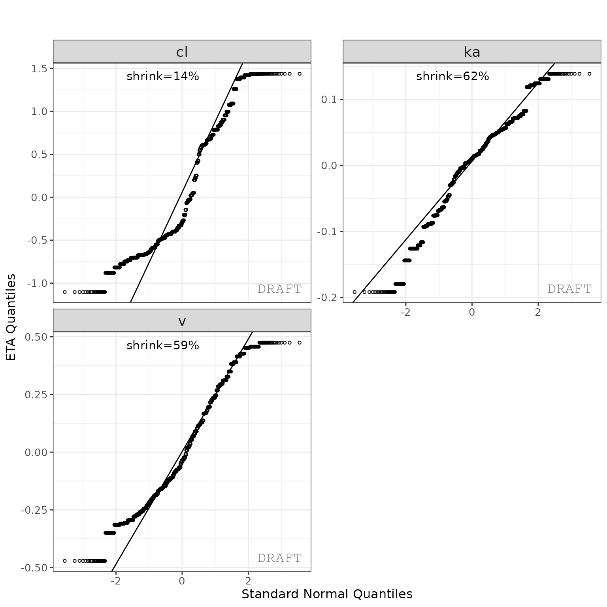
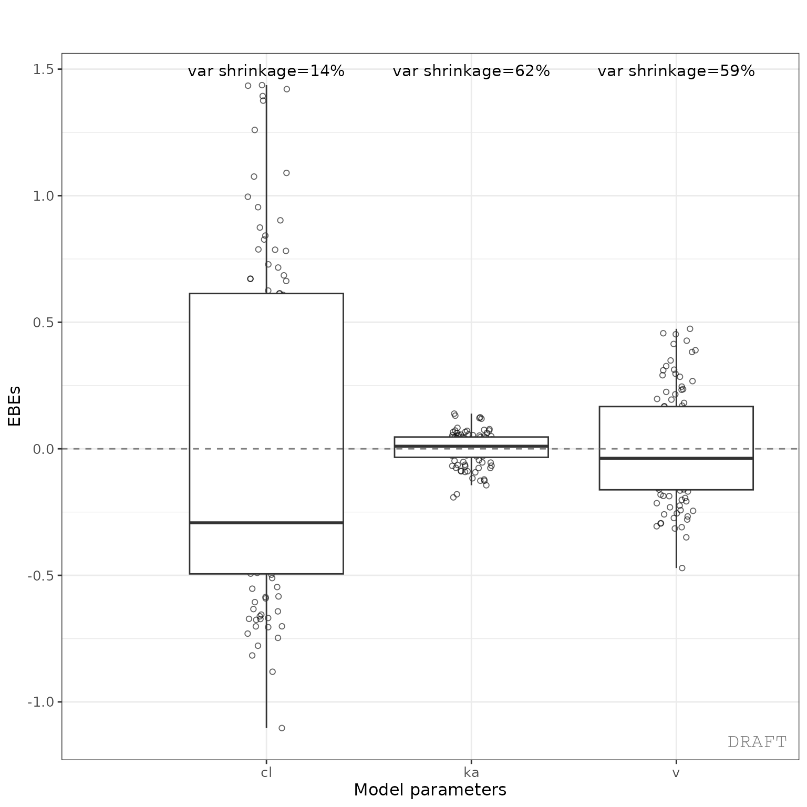
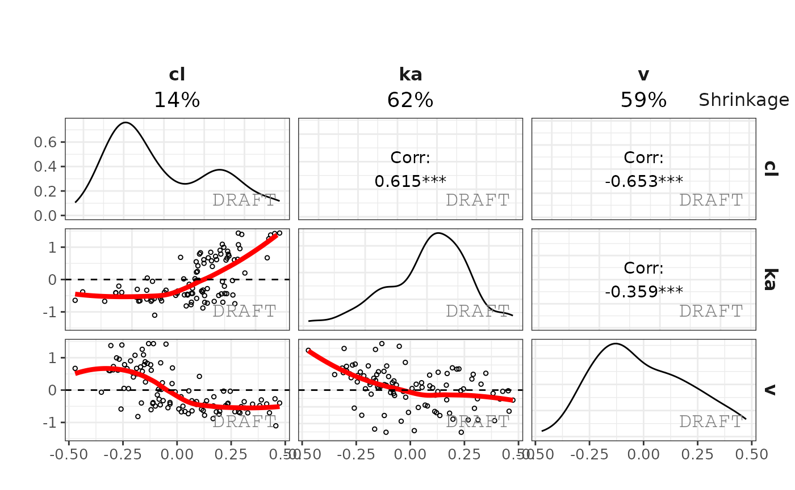
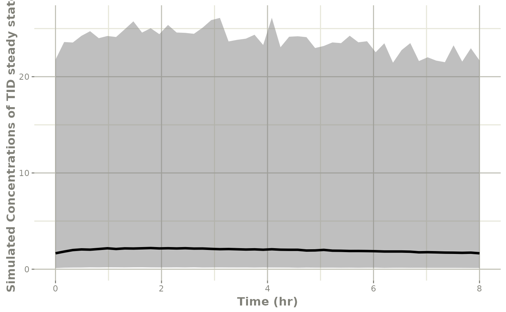

xgxr and ggPMX integration with nlmixr2
Source:vignettes/xgxr-nlmixr-ggpmx.Rmd
xgxr-nlmixr-ggpmx.RmdThis shows an example of integrated workflow between
xgxr nlmixr and ggPmx
library(rxode2)
library(nlmixr2)
library(xgxr)
library(readr)
library(ggplot2)
library(dplyr)
library(tidyr)
library(ggPMX)
library(broom)
library(broom.mixed)Load the data
pkpd_data <-
case1_pkpd %>%
arrange(DOSE) %>%
select(-IPRED) %>%
mutate(TRTACT_low2high = factor(TRTACT, levels = unique(TRTACT)),
TRTACT_high2low = factor(TRTACT, levels = rev(unique(TRTACT))),
DAY_label = paste("Day", PROFDAY),
DAY_label = ifelse(DAY_label == "Day 0","Baseline",DAY_label))
pk_data <- pkpd_data %>%
filter(CMT == 2)
pk_data_cycle1 <- pk_data %>%
filter(CYCLE == 1)Exploratory analysis using ggplot and xgx helper functions
Use xgxr for simplified concentration over time, colored by Dose, mean +/- 95% CI
Often in exploring data it is worthwhile to plot by dose by each
nominal time and add the 95% confidence interval. This typical plot can
be cumbersome and lack some nice features that xgxr can
help with. Note the following helper functions:
xgx_theme_set()this sets the theme to black and white color theme and other best practices inxgxr.xgx_geom_ci()which creates the Confidence Interval and mean plots in a simple interface.xgx_scale_y_log10()which creates a log-scale that includes the minor grids that immediately show the viewer that the plot is a semi-log plot without carefully examining the y axis.xgx_scale_x_time_units()which creates an appropriate scale based on your times observed and the units you use. It also allows you to convert units easily for the right display.xgx_annote_status()which adds aDRAFTannotation which is often considered best practice when the data or plots are draft.
xgx_theme_set() # This uses black and white theme based on xgxr best
# practices
# flag for labeling figures as draft
status <- "DRAFT"
time_units_dataset <- "hours"
time_units_plot <- "days"
trtact_label <- "Dose"
dose_label <- "Dose (mg)"
conc_label <- "Concentration (ng/ml)"
auc_label <- "AUCtau (h.(ng/ml))"
concnorm_label <- "Normalized Concentration (ng/ml)/mg"
sex_label <- "Sex"
w100_label <- "WEIGHTB>100"
pd_label <- "FEV1 (mL)"
cens_label <- "Censored"
ggplot(data = pk_data_cycle1, aes(x = NOMTIME,
y = LIDV,
group = DOSE,
color = TRTACT_high2low)) +
xgx_geom_ci(conf_level = 0.95) + # Easy CI with xgxr
xgx_scale_y_log10() + # semi-log plots with semi-log grid minor lines
xgx_scale_x_time_units(units_dataset = time_units_dataset,
units_plot = time_units_plot) +
# The last line creates an appropriate x scale based on time-units
# and time unit scale
labs(y = conc_label, color = trtact_label) +
xgx_annotate_status(status) # Adds draft status to plot
With this plot you see the mean concentrations confidence intervals stratified by dose
Concentration over time, faceted by Dose, mean +/- 95% CI, overlaid on gray spaghetti plots
Not only is it useful to look at the mean concentrations, it is often
useful to look at the mean concentrations and their relationship between
actual individual profiles. Using ggplot coupled with the
xgxr helper functions used above, we can easily create
these plots as well:
ggplot(data = pk_data_cycle1, aes(x = TIME, y = LIDV)) +
geom_line(aes(group = ID), color = "grey50", linewidth = 1, alpha = 0.3) +
geom_cens(aes(cens=CENS)) +
xgx_geom_ci(aes(x = NOMTIME, color = NULL, group = NULL, shape = NULL), conf_level = 0.95) +
xgx_scale_y_log10() +
xgx_scale_x_time_units(units_dataset = time_units_dataset, units_plot = time_units_plot) +
labs(y = conc_label, color = trtact_label) +
theme(legend.position = "none") +
facet_grid(.~TRTACT_low2high) +
xgx_annotate_status(status)
To me it appears the variability seems to be higher with higher doses and higher with later times.
Exploring the dose linearity
A common way to explore the dose linearity is to normalize by the dose. If the confidence intervals overlap, often this is a dose linear example.
ggplot(data = pk_data_cycle1,
aes(x = NOMTIME,
y = LIDV / as.numeric(as.character(DOSE)),
group = DOSE,
color = TRTACT_high2low)) +
xgx_geom_ci(conf_level = 0.95, alpha = 0.5, position = position_dodge(1)) +
xgx_scale_y_log10() +
xgx_scale_x_time_units(units_dataset = time_units_dataset, units_plot = time_units_plot) +
labs(y = concnorm_label, color = trtact_label) +
xgx_annotate_status(status)
This example seems to be dose-linear, with the exception of the censored data. This can be made even more clear by removing the censored data for this plot:
ggplot(data = pk_data_cycle1 %>% filter(CENS == 0),
aes(x = NOMTIME,
y = LIDV / as.numeric(as.character(DOSE)),
group = DOSE,
color = TRTACT_high2low)) +
xgx_geom_ci(conf_level = 0.95, alpha = 0.5, position = position_dodge(1)) +
xgx_scale_y_log10() +
xgx_scale_x_time_units(units_dataset = time_units_dataset, units_plot = time_units_plot) +
labs(y = concnorm_label, color = trtact_label) +
xgx_annotate_status(status)
The lowest dose, with the most censoring, is the one that seems to be the outlier. That is likely an artifact of censoring.
Other ways to explore the data include by looking at normalized Cmax and AUC values (which we will skip in this vignette).
Exploring Covariates in the dataset
Using the xgx helper functions to ggplot
you can explore the effect of high baseline weight. This particular plot
is shown below:
ggplot(data = pk_data_cycle1, aes(x = NOMTIME,
y = LIDV,
group = WEIGHTB > 100,
color = WEIGHTB > 100)) +
xgx_geom_ci(conf_level = 0.95) +
xgx_scale_y_log10() +
xgx_scale_x_time_units(units_dataset = time_units_dataset, units_plot = time_units_plot) +
facet_grid(.~DOSE) +
labs(y = conc_label, color = w100_label) +
xgx_annotate_status(status)
It seems that the weight effect is not extreme for either dose group
Fitting the data with nlmixr
First we need to subset to the PK only data and rename
LIDV to DV
Next, for the purpose of this demonstration we will subset to 7 patients per dose group):
doses <- unique(dat$DOSE)
nid <- 20 # 7 ids per dose group
dat2 <-
dat %>%
group_by(DOSE) %>%
filter(ID %in% sort(unique(ID))[1:nid]) %>%
ungroup()This approach is not only good for demonstration, but allows a variety of structural models to be applied more quickly while developing a base model. The full dataset can then be applied to the selected model to make sure it makes sense with all the data.
Next create a 2 compartment model:
## Use 2 compartment model
cmt2 <- function() {
ini({
lka <- log(0.1); label("Ka")
lv <- log(10); label("Vc")
lcl <- log(4); label("Cl")
lq <- log(10); label("Q")
lvp <- log(20); label("Vp")
eta.ka ~ 0.01
eta.v ~ 0.1
eta.cl ~ 0.1
logn.sd = 10
})
model({
ka <- exp(lka + eta.ka)
cl <- exp(lcl + eta.cl)
v <- exp(lv + eta.v)
q <- exp(lq)
vp <- exp(lvp)
linCmt() ~ lnorm(logn.sd)
})
}
## Check parsing
cmt2m <- nlmixr(cmt2)
print(cmt2m)
#> ── rxode2-based solved PK 2-compartment model with first-order absorption ──────
#> ── Initalization: ──
#> Fixed Effects ($theta):
#> lka lv lcl lq lvp logn.sd
#> -2.302585 2.302585 1.386294 2.302585 2.995732 10.000000
#>
#> Omega ($omega):
#> eta.ka eta.v eta.cl
#> eta.ka 0.01 0.0 0.0
#> eta.v 0.00 0.1 0.0
#> eta.cl 0.00 0.0 0.1
#> ── μ-referencing ($muRefTable): ──
#> theta eta level
#> 1 lka eta.ka id
#> 2 lcl eta.cl id
#> 3 lv eta.v id
#>
#> ── Model (Normalized Syntax): ──
#> function() {
#> ini({
#> lka <- -2.30258509299405
#> label("Ka")
#> lv <- 2.30258509299405
#> label("Vc")
#> lcl <- 1.38629436111989
#> label("Cl")
#> lq <- 2.30258509299405
#> label("Q")
#> lvp <- 2.99573227355399
#> label("Vp")
#> logn.sd <- c(0, 10)
#> eta.ka ~ 0.01
#> eta.v ~ 0.1
#> eta.cl ~ 0.1
#> })
#> model({
#> ka <- exp(lka + eta.ka)
#> cl <- exp(lcl + eta.cl)
#> v <- exp(lv + eta.v)
#> q <- exp(lq)
#> vp <- exp(lvp)
#> linCmt() ~ lnorm(logn.sd)
#> })
#> }Now that the parsing of the nlmixr model is complete start and compare a few models:
## First try log-normal (since the variability seemed proportional to concentration)
cmt2fit.logn <-
nlmixr(
cmt2m, data = dat2,
est = "saem",
control=list(print=0),
table=tableControl(cwres=TRUE, npde=TRUE)
)
#> [====|====|====|====|====|====|====|====|====|====] 0:00:00
#> [====|====|====|====|====|====|====|====|====|====] 0:00:00
#> [====|====|====|====|====|====|====|====|====|====] 0:00:00
#> [====|====|====|====|====|====|====|====|====|====] 0:00:00
#> [====|====|====|====|====|====|====|====|====|====] 0:00:00
#> [====|====|====|====|====|====|====|====|====|====] 0:00:00
#> [====|====|====|====|====|====|====|====|====|====] 0:00:00
#> [====|====|====|====|====|====|====|====|====|====] 0:00:00
#> [====|====|====|====|====|====|====|====|====|====] 0:00:00
#> [====|====|====|====|====|====|====|====|====|====] 0:00:00
#> [====|====|====|====|====|====|====|====|====|====] 0:00:00
#> [====|====|====|====|====|====|====|====|====|====] 0:00:00
#> [====|====|====|====|====|====|====|====|====|====] 0:00:00
#> [====|====|====|====|====|====|====|====|====|====] 0:00:00
#> [====|====|====|====|====|====|====|====|====|====] 0:00:00
#> [====|====|====|====|====|====|====|====|====|====] 0:00:00
#> [====|====|====|====|====|====|====|====|====|====] 0:00:00
#> [====|====|====|====|====|====|====|====|====|====] 0:00:00
#> [====|====|====|====|====|====|====|====|====|====] 0:00:00
## Now try proportional
cmt2fit.prop <-
cmt2fit.logn %>%
update(linCmt() ~ prop(prop.sd)) %>%
nlmixr(
est="saem", control=list(print=0),
table=tableControl(npde=TRUE, cwres=TRUE)
)
#> [====|====|====|====|====|====|====|====|====|====] 0:00:00
#> [====|====|====|====|====|====|====|====|====|====] 0:00:00
#> [====|====|====|====|====|====|====|====|====|====] 0:00:00
#> [====|====|====|====|====|====|====|====|====|====] 0:00:00
#> [====|====|====|====|====|====|====|====|====|====] 0:00:00
#> [====|====|====|====|====|====|====|====|====|====] 0:00:00
#> [====|====|====|====|====|====|====|====|====|====] 0:00:00
#> [====|====|====|====|====|====|====|====|====|====] 0:00:00
#> [====|====|====|====|====|====|====|====|====|====] 0:00:00
#> [====|====|====|====|====|====|====|====|====|====] 0:00:00
#> [====|====|====|====|====|====|====|====|====|====] 0:00:00
#> [====|====|====|====|====|====|====|====|====|====] 0:00:00
#> [====|====|====|====|====|====|====|====|====|====] 0:00:00
#> [====|====|====|====|====|====|====|====|====|====] 0:00:00
#> [====|====|====|====|====|====|====|====|====|====] 0:00:00
#> [====|====|====|====|====|====|====|====|====|====] 0:00:00
#> [====|====|====|====|====|====|====|====|====|====] 0:00:00
#> [====|====|====|====|====|====|====|====|====|====] 0:00:00
#> [====|====|====|====|====|====|====|====|====|====] 0:00:00
#> [====|====|====|====|====|====|====|====|====|====] 0:00:00
#> [====|====|====|====|====|====|====|====|====|====] 0:00:00
#> [====|====|====|====|====|====|====|====|====|====] 0:00:00
## now try add+prop
cmt2fit.add.prop <-
cmt2fit.prop %>%
update(linCmt() ~ prop(prop.sd) + add(add.sd)) %>%
nlmixr(
est="saem", control=list(print=0),
table=tableControl(npde=TRUE, cwres=TRUE)
)
#> [====|====|====|====|====|====|====|====|====|====] 0:00:00
#> [====|====|====|====|====|====|====|====|====|====] 0:00:00
#> [====|====|====|====|====|====|====|====|====|====] 0:00:00
#> [====|====|====|====|====|====|====|====|====|====] 0:00:00
#> [====|====|====|====|====|====|====|====|====|====] 0:00:00
#> [====|====|====|====|====|====|====|====|====|====] 0:00:00
#> [====|====|====|====|====|====|====|====|====|====] 0:00:00
#> [====|====|====|====|====|====|====|====|====|====] 0:00:00
#> [====|====|====|====|====|====|====|====|====|====] 0:00:00
#> [====|====|====|====|====|====|====|====|====|====] 0:00:00
#> [====|====|====|====|====|====|====|====|====|====] 0:00:00
#> [====|====|====|====|====|====|====|====|====|====] 0:00:00
#> [====|====|====|====|====|====|====|====|====|====] 0:00:00
#> [====|====|====|====|====|====|====|====|====|====] 0:00:00
#> [====|====|====|====|====|====|====|====|====|====] 0:00:00
#> [====|====|====|====|====|====|====|====|====|====] 0:00:00
#> [====|====|====|====|====|====|====|====|====|====] 0:00:00
#> [====|====|====|====|====|====|====|====|====|====] 0:00:00
#> [====|====|====|====|====|====|====|====|====|====] 0:00:00
#> [====|====|====|====|====|====|====|====|====|====] 0:00:00
#> [====|====|====|====|====|====|====|====|====|====] 0:00:00
#> [====|====|====|====|====|====|====|====|====|====] 0:00:00Now that we have run 3 different estimation methods, we can compare the results side-by-side
library(huxtable)
huxreg(
"lognormal"=cmt2fit.logn,
"proportional"=cmt2fit.prop,
"add+prop"=cmt2fit.add.prop,
statistics=c(N="nobs", "logLik", "AIC"),
stars = NULL
)| lognormal | proportional | add+prop | |
|---|---|---|---|
| lka | -1.064 | -1.247 | -0.841 |
| (0.089) | (0.088) | (0.085) | |
| lv | 1.664 | 1.313 | 2.710 |
| (0.175) | (0.208) | (0.099) | |
| lcl | 2.036 | 1.951 | 2.138 |
| (0.085) | (0.086) | (0.076) | |
| lq | 2.913 | 2.576 | 2.842 |
| (0.072) | (0.064) | (0.063) | |
| lvp | 4.745 | 4.529 | 4.906 |
| (0.026) | (0.026) | (0.036) | |
| sd__eta.ka | 0.522 | 0.642 | 0.378 |
| (NA) | (NA) | (NA) | |
| sd__eta.v | 1.406 | 1.741 | 0.239 |
| (NA) | (NA) | (NA) | |
| sd__eta.cl | 0.843 | 0.854 | 0.748 |
| (NA) | (NA) | (NA) | |
| logn.sd | 0.379 | ||
| (NA) | |||
| prop.sd | 0.346 | 0.292 | |
| (NA) | (NA) | ||
| add.sd | 0.019 | ||
| (NA) | |||
| N | 2600 | 2600 | 2600 |
| logLik | 3188.731 | 2946.910 | 3453.453 |
| AIC | -6359.461 | -5875.821 | -6886.907 |
Note that the additive and proportional model has the additive component approach zero. When comparing the objective functions of log-normal and proportional models, the proportional model has the lowest objective function value. (Since we modeled log-normal without data transformation it is appropriate to compare the AIC/Objective function values)
Model Diagnostics with ggPMX
## The controller then can be piped into a specific plot
ctr <- pmx_nlmixr(cmt2fit.logn, conts = "WEIGHTB", cats="TRTACT", vpc=TRUE)
ctr %>% pmx_plot_npde_pred()
## Modify graphical options and remove DRAFT label:
ctr %>%
pmx_plot_npde_time(
smooth = list(color="blue"), point = list(shape=4), is.draft=FALSE,
labels = list(x = "Time after first dose (days)", y = "Normalized PDE")
)
ctr %>% pmx_plot_dv_ipred(scale_x_log10=TRUE, scale_y_log10=TRUE, filter=IPRED>0.001)
ctr %>% pmx_plot_dv_pred(scale_x_log10=TRUE, scale_y_log10=TRUE, filter=IPRED>0.001)
ctr %>% pmx_plot_abs_iwres_ipred()
ctr %>%
pmx_plot_individual(
1,
filter= TIME > 0 & TIME < 48,
facets = list(nrow = 2, ncol = 2)
)
ctr %>% pmx_plot_iwres_dens()
ctr %>% pmx_plot_eta_qq()
This creates two reports with default settings, both a pdf and word document. The report can be customized by editing the default template to include project specificities (change labels, stratifications, filtering, etc.).
ctr %>% pmx_plot_eta_box()
ctr %>% pmx_plot_eta_hist()
ctr %>% pmx_plot_eta_matrix()
This creates two reports with default settings, both a pdf and word document. The report can be customized by editing the default template to include project specifics (change labels, stratification, filtering, etc.).
Simulation of a new scenario with rxode2
By creating events you can simply simulate a new scenario. Perhaps
your drug development team wants to explore the 100 mg dose 3 times a
day dosing to see what happens with the PK. You can simply simulate from
the nlmixr model using a new
event table created from rxode2().
In this case we wish to simulate with some variability and see what happens at steady state:
# Start a new simulation
ev <- et(amt=100, ii=8, ss=1)
ev$add.sampling(seq(0, 8, length.out=50))
print(ev)
#> ── EventTable with 51 records ──
#> 1 dosing records (see $get.dosing(); add with add.dosing or et)
#> 50 observation times (see $get.sampling(); add with add.sampling or et)
#> ── First part of : ──
#> # A tibble: 51 × 5
#> time amt ii evid ss
#> <dbl> <dbl> <dbl> <evid> <int>
#> 1 0 NA NA 0:Observation NA
#> 2 0 100 8 1:Dose (Add) 1
#> 3 0.163 NA NA 0:Observation NA
#> 4 0.327 NA NA 0:Observation NA
#> 5 0.490 NA NA 0:Observation NA
#> 6 0.653 NA NA 0:Observation NA
#> 7 0.816 NA NA 0:Observation NA
#> 8 0.980 NA NA 0:Observation NA
#> 9 1.14 NA NA 0:Observation NA
#> 10 1.31 NA NA 0:Observation NA
#> # ℹ 41 more rowsAn nlmixr model already includes information about the parameter estimates and can simulate without uncertainty in the population parameters or covariances, like what is done for a VPC.
If you wish to simulate 100 patients repeated by
100 different theoretical studies where you simulate from
the uncertainty in the fixed parameter estimates and covariances you can
very easily with nlmixr2/rxode2:
set.seed(100)
sim1 <- rxSolve(cmt2fit.logn, ev, nSub=100, nStud=100)
print(sim1)
#> ── Solved rxode2 object ──
#> ── Parameters ($params): ──
#> # A tibble: 10,000 × 10
#> sim.id lka lv lcl lq lvp logn.sd eta.ka eta.v eta.cl
#> <int> <dbl> <dbl> <dbl> <dbl> <dbl> <dbl> <dbl> <dbl> <dbl>
#> 1 1 -1.03 1.78 2.09 2.93 4.75 0.379 0.0558 -0.0721 -0.893
#> 2 2 -1.03 1.78 2.09 2.93 4.75 0.379 0.939 -0.692 -0.850
#> 3 3 -1.03 1.78 2.09 2.93 4.75 0.379 0.757 1.56 -0.00285
#> 4 4 -1.03 1.78 2.09 2.93 4.75 0.379 -0.224 0.107 0.443
#> 5 5 -1.03 1.78 2.09 2.93 4.75 0.379 1.22 -1.72 -0.0212
#> 6 6 -1.03 1.78 2.09 2.93 4.75 0.379 0.801 0.895 -0.389
#> 7 7 -1.03 1.78 2.09 2.93 4.75 0.379 -0.232 -0.452 -1.11
#> 8 8 -1.03 1.78 2.09 2.93 4.75 0.379 -0.318 -3.77 -0.271
#> 9 9 -1.03 1.78 2.09 2.93 4.75 0.379 -0.0567 1.39 0.333
#> 10 10 -1.03 1.78 2.09 2.93 4.75 0.379 0.814 -0.808 -0.0480
#> # ℹ 9,990 more rows
#> ── Initial Conditions ($inits): ──
#> named numeric(0)
#>
#> Simulation with uncertainty in:
#> • parameters ($thetaMat for changes)
#> • omega matrix ($omegaList)
#> • sigma matrix ($sigmaList)
#>
#> ── First part of data (object): ──
#> # A tibble: 500,000 × 9
#> sim.id time ka cl v q vp ipredSim sim
#> <int> <dbl> <dbl> <dbl> <dbl> <dbl> <dbl> <dbl> <dbl>
#> 1 1 0 0.376 3.32 5.50 18.8 115. 3.19 3.72
#> 2 1 0.163 0.376 3.32 5.50 18.8 115. 3.97 3.02
#> 3 1 0.327 0.376 3.32 5.50 18.8 115. 4.33 6.62
#> 4 1 0.490 0.376 3.32 5.50 18.8 115. 4.47 9.63
#> 5 1 0.653 0.376 3.32 5.50 18.8 115. 4.51 2.85
#> 6 1 0.816 0.376 3.32 5.50 18.8 115. 4.50 3.61
#> # ℹ 499,994 more rowsYou may examine the simulated study information easily, as show in
the rxode2() printout:
head(sim1$thetaMat)
#> lka lv lcl lq lvp
#> [1,] 0.03072594 0.1126090 0.05726746 0.020804023 0.0009481789
#> [2,] 0.06459597 -0.2907144 -0.05778440 0.078149002 -0.0032245301
#> [3,] -0.06980928 -0.2748301 -0.12626765 -0.130467295 -0.0161629640
#> [4,] -0.06600767 -0.2285543 0.18486419 0.007389282 0.0119145272
#> [5,] -0.18463081 -0.1012057 0.07603430 -0.197810789 -0.0464466737
#> [6,] -0.06061441 0.0512554 -0.06151780 -0.046309115 -0.0196741354You can also see the covariance matricies that are simulated (note they come from an inverse Wishart distribution):
head(sim1$omegaList)
#> [[1]]
#> eta.ka eta.v eta.cl
#> eta.ka 0.29997290 -0.09007988 -0.01757125
#> eta.v -0.09007988 2.57587603 0.07969952
#> eta.cl -0.01757125 0.07969952 0.72106838
#>
#> [[2]]
#> eta.ka eta.v eta.cl
#> eta.ka 0.25167564 -0.04514704 -0.02900138
#> eta.v -0.04514704 2.29876356 0.11513637
#> eta.cl -0.02900138 0.11513637 0.67804384
#>
#> [[3]]
#> eta.ka eta.v eta.cl
#> eta.ka 0.23647083 0.01641747 0.03209255
#> eta.v 0.01641747 2.31244970 -0.27720958
#> eta.cl 0.03209255 -0.27720958 0.68226522
#>
#> [[4]]
#> eta.ka eta.v eta.cl
#> eta.ka 0.294395228 0.004200885 0.02021584
#> eta.v 0.004200885 1.782674241 0.08305926
#> eta.cl 0.020215840 0.083059259 0.62181955
#>
#> [[5]]
#> eta.ka eta.v eta.cl
#> eta.ka 0.30363041 0.07368505 -0.01923075
#> eta.v 0.07368505 2.40186505 0.04651531
#> eta.cl -0.01923075 0.04651531 0.69504377
#>
#> [[6]]
#> eta.ka eta.v eta.cl
#> eta.ka 0.29400629 -0.1545503 -0.04433065
#> eta.v -0.15455026 2.1203411 0.15974347
#> eta.cl -0.04433065 0.1597435 0.70087769
head(sim1$sigmaList)
#> [[1]]
#> rxerr.rxLinCmt
#> rxerr.rxLinCmt 0.9911237
#>
#> [[2]]
#> rxerr.rxLinCmt
#> rxerr.rxLinCmt 1.028955
#>
#> [[3]]
#> rxerr.rxLinCmt
#> rxerr.rxLinCmt 1.016967
#>
#> [[4]]
#> rxerr.rxLinCmt
#> rxerr.rxLinCmt 1.024366
#>
#> [[5]]
#> rxerr.rxLinCmt
#> rxerr.rxLinCmt 0.9737614
#>
#> [[6]]
#> rxerr.rxLinCmt
#> rxerr.rxLinCmt 1.025798It is also easy enough to create a plot to see what is going on with the simulation:
conf <- confint(sim1, "sim")
p1 <- plot(conf) ## This returns a ggplot2 object
## you can tweak the plot by the standard ggplot commands
p1 +
xlab("Time (hr)") +
ylab("Simulated Concentrations of TID steady state")
# And put the same plot on a semi-log plot
p1 +
xlab("Time (hr)") +
ylab("Simulated Concentrations of TID steady state") +
xgx_scale_y_log10()
For more complex simulations with variability you can also simulate dosing windows and sampling windows and use any tool you want to summarize it in the way you wish.